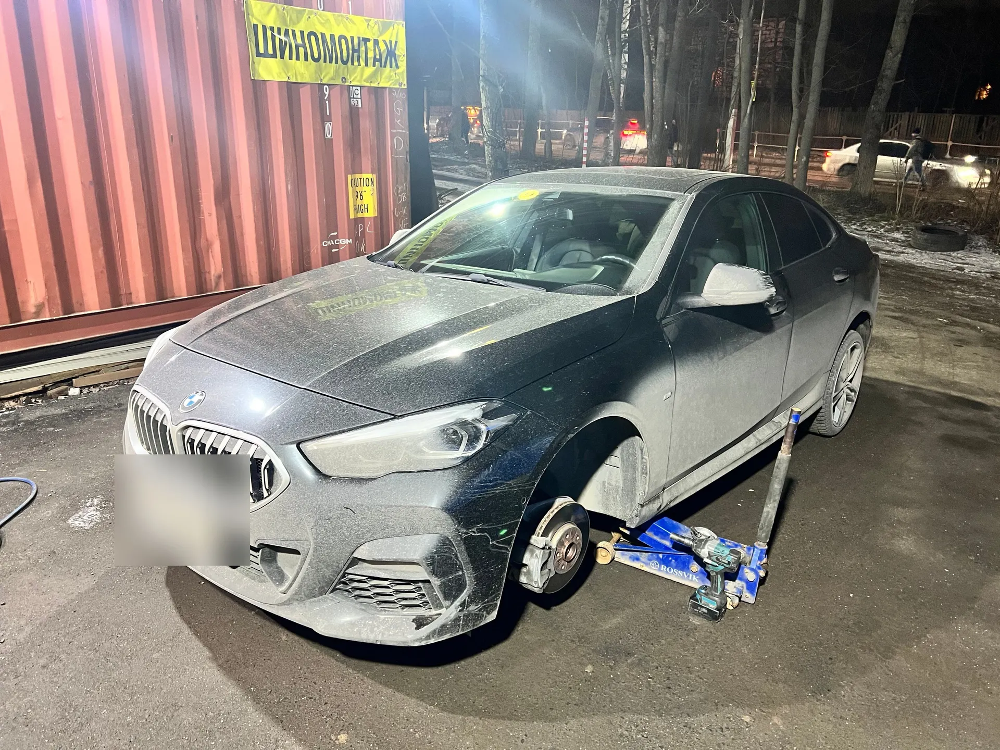
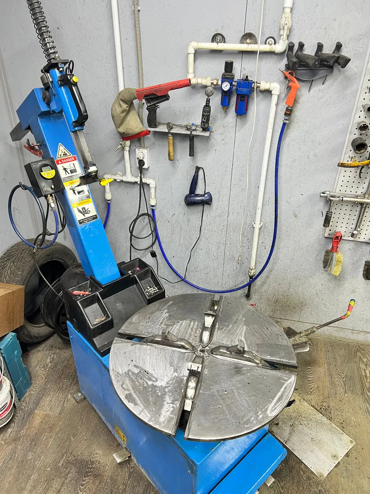
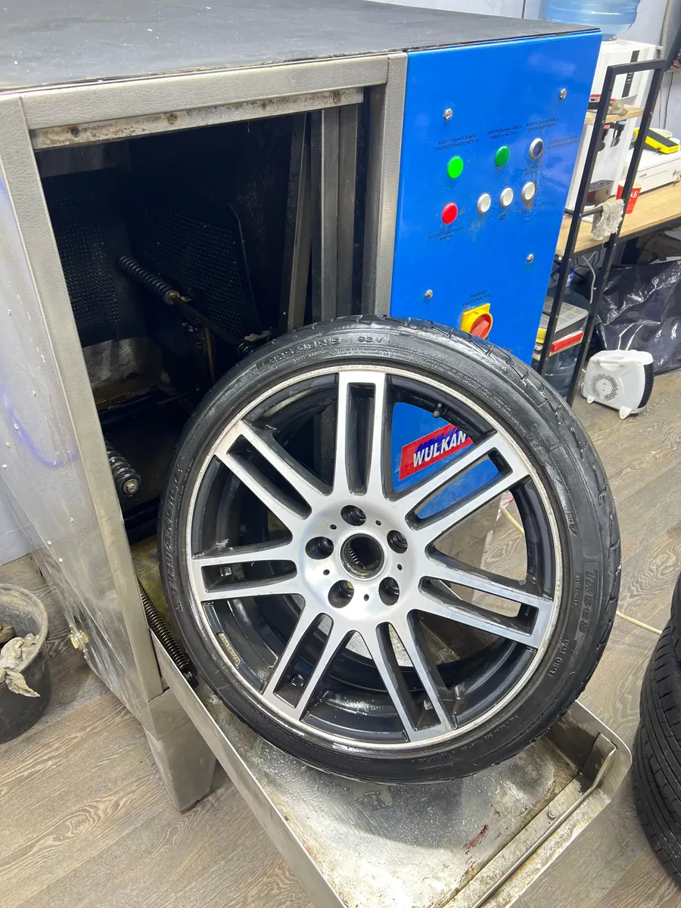
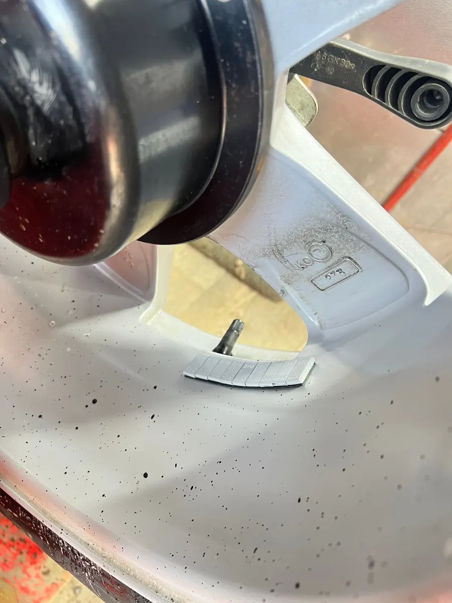

Шиномонтаж · Долгопрудный
Шиномонтаж в Долгопрудном по записи, диски правим на месте
В цене комплекса уже мойка колёс, балансировка с грузами и протяжка динамометрическим ключом. Цены открыты ниже.
- Колёса от R13 до R26, легковые и мото
- Ежедневно 09:00-21:00
- «Хорошее место 2026» по версии Яндекс Карт

Что входит в комплекс шиномонтажа
Входит
- Снять и поставить колёса
- Технологическая мойка колёс
- Монтаж и демонтаж шин
- Балансировка, грузы включены
- Протяжка колёс динамометрическим ключом
Отдельно, если нужно
- Правка литых дисков
- Ремонт проколов и боковых порезов
- Сезонное хранение
Цены
Цены с карточки на Яндекс.Картах. Итог зависит от диаметра колёс (R13-R26), точную сумму назовём по телефону до приезда.
Шиномонтаж
- Комплекс шиномонтажакомплект из 4 колёс, мойка, балансировка и протяжка в ценеот 3 400 ₽
- Балансировкацена зависит от диаметраот 200 ₽
- Технологическая мойка колесадля более точной балансировки100 ₽ за колесо
Ремонт шин и дисков
- Правка литого дискавосстановление геометрии, зависит от поврежденияот 2 000 ₽
- Ремонт кордовой заплаткойгарантия до полного износаот 900 ₽
- Ремонт бокового пореза или грыжигорячая вулканизация, гарантия до полного износаот 1 300 ₽
- Дошиповка зимней резинывосстановление шипов50 ₽ за шип
Хранение и мото
- Хранение колёскомплект из 4 шт., от сезона до сезона, по договоруот 3 400 ₽
- Мотошиномонтажснять, поставить, монтаж и балансировка2 700 ₽ за колесо
- Правка литого мотодискаот 5 000 ₽
Как проходит визит
- 01
Запишитесь
Напишите в Telegram или WhatsApp или позвоните +7 (916) 450-49-39. Скажите размер колёс.
- 02
Приезжайте к своему времени
Долгопрудный, рядом с яхт-клубом «Аврора».
- 03
Переобуваем
Моем колёса, балансируем и протягиваем динамометрическим ключом.
- 04
Называем итог до оплаты
Наличными, картой, переводом, по QR-коду или через СБП.



Что вы получите
Мойка, балансировка и протяжка в цене
Всё это входит в комплекс шиномонтажа, отдельно не доплачиваете.
Литые диски правим на месте
Восстанавливаем геометрию диска, цена от 2000 ₽ в зависимости от повреждения.
Гарантия на ремонт до полного износа
На кордовую заплатку и ремонт бокового пореза горячей вулканизацией.
Хранение по договору
Комплект из 4 колёс от сезона до сезона, договор выдаём на руки.
Отзывы с Яндекс.Карт
«Правил диски на бмв 22 радиус и переобувался. Вме быстро,четко,за разумные деньги!»
Alexandr Ruhmakov · 10 января 2025
«Максимально адекватные и доброжелательные ребята! Умеют слушать и дают грамотные советы. Я проехал три шиномонтажки и только тут указали на кривую резину и 1 гнутый диск.»
Григорий Ч. · 29 мая 2021
«Переобуваю свой Фольксваген (Форд) уже больше двух лет - никаких нареканий. Ребята работают быстро, ничего лишнего не предлагают, всегда четко дают рекомендации по имеющимся шинам.»
Леопольд К. · 28 октября 2025
Отзывы с карточки на Яндекс.Картах, без правок.
Частые вопросы
Где вы находитесь?
В Долгопрудном, рядом с яхт-клубом «Аврора». Точка отмечена на Яндекс.Картах: Shin_ship.
Когда работаете?
Каждый день с 9:00 до 21:00, без выходных.
Нужна ли запись?
Лучше записаться заранее: напишите в Telegram или WhatsApp, договоримся на удобное время.
Работаете с мотоциклами?
Да: мотошиномонтаж 2700 ₽ за колесо и правка литых мотодисков от 5000 ₽.
Чем можно оплатить?
Наличными, картой, банковским переводом, по QR-коду или через СБП.
Запишитесь к своему времени
- Адрес
- Рядом с яхт-клубом «Аврора», Долгопрудный
- Часы
- Ежедневно 09:00-21:00
- Телефон
- +7 (916) 450-49-39